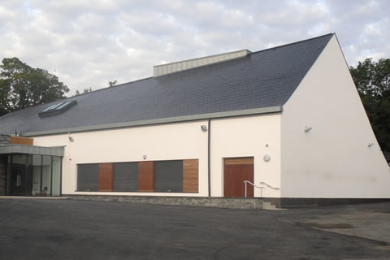
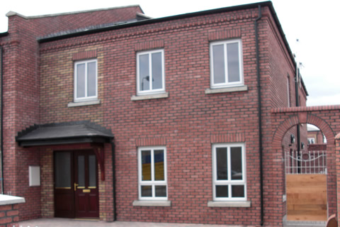

PROJECT ARCHIVE
Places shaped
by practical craft.
A selection of commercial, public and residential projects from the portfolio archive.
15 photographs

Education
St Bronaghs Primary School ↗
Rostrevor, County Down

Retail
Olympic Village retail fit-out ↗
London

Education
Queens University School of Architecture ↗
Belfast

Community
St Marys on the Hill ↗
Glengormley

Residential
Mersey Street housing ↗
East Belfast
Residential
Castlewellan Road social housing ↗
Newcastle, County Down
Education
Springvale Training Centre ↗
Belfast
Education
Simon Building, Manchester University ↗
Manchester
Education
Scoil Chormaic ↗
Stephenstown, Balbriggan, County Dublin
Education
SOAS Senate House redevelopment ↗
London
Education
Willow Dene SEN Primary School ↗
Plumstead, London
Community
Ordnance Unity Centre ↗
Enfield, London
Education
Realt na Mara schools ↗
Donacarney, Ireland
Education
Magherafelt Primary School ↗
Magherafelt, Northern Ireland
Education
Newcastle Primary School ↗
Beechfield Park, Newcastle